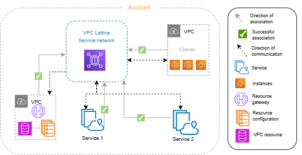

AWS Certified Advanced Networking - Specialty (ANS-C01)
Amazon VPC Lattice Study Guide - Part 1: Core Concepts
Introduction to VPC Lattice
- Definition:
- A fully managed application networking service
- Connects, secures, and monitors services and resources
- Works within a single VPC or across multiple VPCs and accounts
- Designed for microservices architecture
- Core Problem Solved:
- Simplifies networking complexity in modern applications
- Addresses challenges of connecting distributed microservices
- Provides unified connectivity across organizational boundaries
- Enables secure communication between services in different accounts/VPCs

Figure: VPC Overview/figcaption>
Key Components
- Service:
- An independently deployable unit of software
- Can run on EC2, ECS/EKS/Fargate, or Lambda
- Components: target groups, listeners, and rules
- Target Group:
- Collection of resources (targets) running your application
- Supported targets: EC2 instances, IP addresses, Lambda functions, ALBs, ECS tasks, K8s Pods
- Not interchangeable with ELB target groups
- Listener:
- Process that checks for connection requests
- Routes requests to targets in a target group
- Configured with protocol and port number
- Rule:
- Default component of a listener
- Contains priority, actions, and conditions
- Determines how listener routes client requests
- Resource:
- Entity like RDS database, EC2 instance, application endpoint, domain-name target, or IP address
- Requires resource gateway and resource configuration
- Service Network:
- Logical boundary for services and resource configurations
- Enables communication between associated clients and services
- Central component for connectivity management
 Figure: VPC Lattice
Figure: VPC Lattice
Roles and Responsibilities
- Service Network Owner:
- Typically network/cloud administrator
- Creates, shares, and provisions service networks
- Manages access to service networks
- Defines coarse-grained access settings
- Service Owner:
- Typically software developer
- Creates services within VPC Lattice
- Defines routing rules
- Associates services with service networks
- Defines fine-grained access settings
- Resource Owner:
- Typically software developer/database admin
- Creates resource configurations
- Defines access settings for resources
- Associates resource configurations with service networks
Critical Limitations
- Connection Timeouts:
- Idle connection timeout: 1 minute
- Maximum connection duration: 10 minutes
- Auth Policy Limitations:
- Auth policies not supported on resource configurations
- Service network auth policies not applicable to resource configurations
- Target Group Restrictions:
- Maximum 6 MB request body size for Lambda functions
- Maximum 6 MB response size from Lambda functions
- Cannot register VPC endpoints or public IP addresses as targets
Exam Tips
- Key Concepts to Remember:
- Service network is the central connectivity component
- Clear distinction between services and resources
- Three distinct roles with different responsibilities
- Target groups are VPC Lattice-specific (not interchangeable with ELB)
- Common Scenarios:
- Connecting microservices across multiple VPCs
- Securing service-to-service communication
- Implementing fine-grained access controls
- Monitoring application traffic across organizational boundaries
Amazon VPC Lattice Study Guide - Part 2: How VPC Lattice Works
Communication Flow Fundamentals
- Basic Communication Rules:
- VPCs connect to service networks via associations or VPC endpoints
- Services receive requests only from clients in connected VPCs
- Clients can only send requests to services in the same service network
- Communication is controlled by access settings (auth policies)
- Client Definition:
- Resources in VPCs connected to the service network
- Service targets in associated VPCs are also clients
- Service targets in non-associated VPCs are not clients
- Resources in non-associated VPCs are not clients
VPC Connectivity Methods
- VPC Association:
- Direct connection between VPC and service network
- VPC can have only one service network association
- Enables bidirectional communication
- Simplest connectivity method
- VPC Endpoint (Type: Service Network):
- Powered by AWS PrivateLink
- Enables connectivity from on-premises via Direct Connect/VPN
- Supports traffic over VPC peering or Transit Gateway
- Allows connection to multiple service networks
Typical Workflow
- Step 1: Create Service Network
- Service network owner creates the service network
- Establishes logical boundary for services
- Step 2: Create Services
- Service owners create their respective services
- Add listeners and define routing rules
- Configure target groups with instances/resources
- Step 3: Associate Services with Network
- Service network owner or service owner performs association
- Makes services discoverable to other services and clients
- Enables bidirectional communication
- Step 4: Resource Configuration
- Resource owner creates resource gateway in VPC
- Creates resource configuration for the resource
- Associates resource configuration with service network
- Step 5: Connect VPCs to Service Network
- Service network owner associates VPCs or creates endpoints
- Enables clients in VPCs to access services
- Completes the connectivity chain
Service Network Architecture
- Multi-Service Configuration:
- One service network can have multiple services
- Services can be associated with multiple service networks
- Multiple VPCs can connect to one service network
- VPC can connect to multiple service networks via endpoints
- Association Relationships:
- Service-to-Network: Many-to-Many
- VPC-to-Network (via association): One-to-One
- VPC-to-Network (via endpoints): Many-to-Many
- Resource-to-Network: Many-to-Many
Critical Limitations
- VPC Association Constraints:
- VPC can associate with only one service network
- To connect to multiple networks, must use VPC endpoints
- Service Target Behavior:
- Targets in non-associated VPCs cannot access other services
- Targets must be in associated VPCs to be clients
- Resource Access:
- Resources can only receive requests, not make them
- Resources cannot initiate communication to services
Exam Tips
- Key Concepts to Remember:
- Two distinct VPC connection methods with different capabilities
- Clear workflow for establishing service network connectivity
- Bidirectional communication requires proper associations
- VPC association limit (one service network per VPC)
- Common Scenarios:
- Connecting services across organizational boundaries
- Enabling on-premises access to service networks
- Managing multi-VPC service architectures
- Troubleshooting connectivity issues
Amazon VPC Lattice Study Guide - Part 3: Service Networks
Service Network Fundamentals
- Definition and Purpose:
- Logical boundary for services and resource configurations
- Enables discovery, connectivity, accessibility, and observability
- Central component for managing service-to-service communication
- Provides authorization framework for access control
- Key Characteristics:
- Regional resource (operates within an AWS region)
- Can span multiple VPCs and accounts
- Supports both service and resource associations
- Enables controlled access through auth policies
Association Models
- Service Associations:
- Services can associate with multiple service networks
- Association makes service discoverable
- Enables bidirectional communication
- Can be created by service owner or network owner
- Resource Associations:
- Resource configurations can associate with multiple networks
- Makes resources discoverable and accessible
- Enables unidirectional communication (clients to resources)
- Can be created by resource owner or network owner
- VPC Associations:
- VPC can associate with only one service network
- Makes VPC resources clients of the service network
- Can only be created by VPC owner
- Enables access to all services in the network
Multi-Network Architecture
- Service Flexibility:
- Services can be associated with multiple networks
- Enables service reuse across organizational boundaries
- Allows different access policies per network
- Supports diverse client access patterns
- VPC Connectivity Options:
- Direct association: One service network per VPC
- VPC endpoints: Multiple service networks per VPC
- Hybrid connectivity: On-premises access via VPC endpoints
Access Control
- Auth Policy Hierarchy:
- Service network level: Coarse-grained control
- Service level: Fine-grained control
- Most restrictive policy takes precedence
- Resource configurations don't support auth policies
- Security Layers:
- Layer 1: Service/VPC associations
- Layer 2: Security groups on VPC associations
- Layer 3: Service network auth policies
- Layer 4: Service-level auth policies
Critical Limitations
- Association Constraints:
- VPC can associate with only one service network
- VPC endpoints required for multi-network connectivity
- Only VPC owner can create VPC associations
- Auth Policy Limitations:
- Resource configurations don't support auth policies
- Service network auth policies don't apply to resources
- Auth policies require IAM integration
- Quota Limitations:
- Service networks per account: Check current quotas
- Services per service network: Check current quotas
- VPC associations per service network: Check current quotas
Exam Tips
- Key Concepts to Remember:
- Service network is the central connectivity component
- VPC association vs. VPC endpoint differences
- Auth policy hierarchy and precedence
- Multi-network architecture patterns
- Common Scenarios:
- Designing multi-VPC service architectures
- Implementing layered security controls
- Managing cross-account service access
- Connecting on-premises resources to service networks
Amazon VPC Lattice Study Guide - Part 4: Services
Service Fundamentals
- Definition and Purpose:
- Independently deployable unit of software
- Delivers specific task or function
- Can run on EC2, containers, or serverless functions
- Central component for routing traffic to targets
- Service Components:
- Listeners: Check for connection requests
- Listener Rules: Determine traffic routing
- Target Groups: Collections of compute resources
- Access Settings: Control who can access the service
Connection Timeouts
- Critical Timeout Values:
- Idle connection timeout: 1 minute
- Maximum connection duration: 10 minutes
- Timeout Behaviors:
- Idle timeout: Connection closed after 1 minute of inactivity
- Maximum duration: No new streams allowed after 10 minutes
- After maximum duration: Existing streams begin closing process
Service Creation Process
- Step 1: Create Basic Service
- Define name and description
- Configure access settings (optional)
- Set up monitoring details (optional)
- Configure custom domain (optional)
- Step 2: Define Routing
- Create listeners with protocol and port
- Configure listener rules and priorities
- Specify target groups for traffic
- Set up weighted routing (optional)
- Step 3: Create Network Associations
- Associate service with service networks
- Enable client communication
- Configure association tags (optional)
- Step 4: Review and Create
- Verify configuration
- Complete service creation
- Configure DNS for custom domains (if applicable)
Custom Domain Configuration
- Custom Domain Benefits:
- Simpler, more intuitive URLs
- Consistent branding
- Easier for users to remember
- Key Requirements:
- Registered domain name
- SSL/TLS certificate in AWS Certificate Manager (for HTTPS)
- CNAME record mapping custom domain to VPC Lattice domain
- Critical Limitations:
- One custom domain per service
- Cannot modify custom domain after service creation
- Must be unique within a service network
- Certificate must match custom domain name
Certificate Requirements (BYOC)
- Certificate Specifications:
- Must be in AWS Certificate Manager (ACM)
- Must have matching Subject Alternate Name (SAN) or Common Name (CN)
- Only supports 2048-bit RSA keys
- Must be in same region as VPC Lattice service
- Wildcard Support:
- Supports one level of wildcard domain match
- Wildcard only as first-level subdomain
- Example supported: *.example.com for parking.example.com
- Example not supported: *.example.com for parking.different.example.com
Critical Limitations
- Service Constraints:
- Idle timeout: 1 minute (fixed)
- Maximum connection duration: 10 minutes
- Custom domain: One per service, immutable
- Certificate Limitations:
- Only one certificate per service
- Only supports 2048-bit RSA keys
- Limited wildcard support (one level deep)
- No support for multiple wildcards (*.*.example.com)
Exam Tips
- Key Concepts to Remember:
- Service creation workflow (4 steps)
- Connection timeout values (1 minute idle, 10 minutes max)
- Custom domain limitations (one per service, immutable)
- Certificate requirements for HTTPS
- Common Scenarios:
- Setting up services with custom domains
- Managing SSL/TLS certificates
- Configuring service associations
- Troubleshooting connection timeouts
Amazon VPC Lattice Study Guide - Part 5: Target Groups
Target Group Fundamentals
- Definition and Purpose:
- Collection of targets (compute resources) running your application
- Used to route requests to registered targets
- Enables health checking and traffic distribution
- Similar to but not interchangeable with ELB target groups
- Target Types Supported:
- INSTANCE: EC2 instances specified by instance ID
- IP: IP addresses within VPC subnets
- LAMBDA: Single Lambda function
- ALB: Single Application Load Balancer
Routing Configuration
- Protocol and Port Support:
- Protocols: HTTP, HTTPS, TCP
- Ports: 1-65535
- TCP target groups only supported with TLS listeners
- TLS Handling:
- HTTPS target groups use listener's security policy
- VPC Lattice doesn't validate target certificates
- Self-signed or expired certificates are accepted
- Traffic authenticated at packet level (secure despite certificate status)
Routing Algorithm
- Default Algorithm:
- Round robin routing to healthy targets
- Independent routing for each target group
- "Fail open" behavior when all targets unhealthy
- Traffic still routed using round robin when all targets unhealthy
- Request Processing:
- Evaluates listener rules in priority order
- Selects target using round robin algorithm
- Routes independently even if target in multiple groups
Target Type Considerations
- IP Targets:
- Must be from VPC subnets
- Cannot register VPC endpoints or public IPs
- IP address type (IPv4/IPv6) must match target group setting
- LAMBDA Targets:
- Single Lambda function per target group
- Function must be in same account and region
- Maximum request body size: 6 MB
- Maximum response size: 6 MB
- ALB Targets:
- Must be internal Application Load Balancer
- Can register with up to two VPC Lattice services
- ALB must have listener with matching port
- No health checks from VPC Lattice (use ALB health checks)
Protocol Version Support
- Available Versions:
- HTTP/1.1 (default)
- HTTP/2
- gRPC
- gRPC Limitations:
- Requires HTTPS listener
- Only supports INSTANCE and IP target types
- Cannot use Lambda functions as targets
- Service parses gRPC requests for routing
- HTTP/2 Limitations:
- Requires HTTPS listener
- Only supports forward and fixed response rules
- Only supports INSTANCE and IP target types
- Supports client streaming but not target streaming
Health Checks
- Health Check Support:
- Enabled by default for HTTP1 protocol version
- Optional for HTTP2 protocol version
- Not supported for gRPC protocol version
- Not supported for Lambda target groups
- Not supported for ALB target groups
- Key Health Check Settings:
- Protocol: HTTP or HTTPS
- Path: Default is "/"
- Timeout: 5 seconds default (range: 1-120 seconds)
- Interval: 30 seconds default (range: 5-300 seconds)
- Healthy threshold: 5 consecutive successes (range: 2-10)
- Unhealthy threshold: 2 consecutive failures (range: 2-10)
Critical Limitations
- Target Registration Constraints:
- Cannot register VPC endpoints or public IPs
- Cannot change target type after creation
- Lambda target groups limited to one function
- ALB can register with maximum two VPC Lattice services
- Protocol Constraints:
- TCP target groups only with TLS listeners
- TCP only supports INSTANCE and IP target types
- gRPC requires HTTPS listener
- Health Check Limitations:
- Not supported for Lambda target groups
- Not supported for ALB target groups
- Not supported for gRPC protocol version
Exam Tips
- Key Concepts to Remember:
- Four target types with different constraints
- Round robin routing with fail-open behavior
- Protocol version limitations (especially gRPC and HTTP/2)
- Health check support varies by target type
- Common Scenarios:
- Choosing appropriate target type
- Configuring health checks
- Understanding protocol version constraints
- Troubleshooting target registration issues
Amazon VPC Lattice Study Guide - Part 6: HTTP Headers and Lambda Integration
HTTP Headers in VPC Lattice
- X-Forwarded Headers:
- x-forwarded-for: Source IP address
- x-forwarded-for-port: Destination port
- x-forwarded-for-proto: Connection protocol (http | https)
- Added automatically to all requests
- Caller Identity Headers:
- x-amzn-lattice-identity: Authentication information
- Principal: Authenticated principal
- PrincipalOrgID: Organization ID
- SessionName: Authenticated session name
- X509 fields (when using Roles Anywhere)
- x-amzn-lattice-network: VPC information
- Format: SourceVpcArn=arn:aws:ec2:region:account:vpc/id
- x-amzn-lattice-target: Target information
- Format: ServiceArn=arn;ServiceNetworkArn=arn;TargetGroupArn=arn
- Header Security:
- Caller identity headers cannot be spoofed
- VPC Lattice strips these headers from incoming requests
- Headers provide trusted identity information
Lambda Functions as Targets
- Key Capabilities:
- Register Lambda functions as target group targets
- VPC Lattice invokes function when request matches listener rule
- Request content passed to Lambda in JSON format
- Supports both HTTP and HTTPS protocols
- Critical Limitations:
- Lambda function and target group must be in same account and region
- Maximum request body size: 6 MB
- Maximum response size: 6 MB
- One Lambda function per target group
Lambda Function Permissions
- Required Permissions:
- VPC Lattice adds permissions automatically when using console or CLI
- Manual permission addition requires Lambda AddPermission API
- Permission must allow vpc-lattice.amazonaws.com principal
- Permission must allow lambda:InvokeFunction action
- Best Practice:
- Create Lambda function alias
- Include alias in function ARN when registering
- Ensures VPC Lattice always invokes current version
- Simplifies function updates
Lambda Event Structure
- Event Structure Versions:
- V1: Basic structure (legacy)
- V2: Enhanced structure with more context
- Version specified during target group creation
- V2 Event Structure (Key Fields):
- version: "2.0"
- path: Request path
- method: HTTP method
- headers: Request headers
- queryStringParameters: Query parameters
- body: Request body
- isBase64Encoded: Encoding flag
- requestContext: Contains service, identity, and timing information
Base64 Encoding Behavior
- Encoding Rules:
- Base64 encodes body if content-encoding header present
- Exception: No encoding for specific content types:
- text/*
- application/json
- application/xml
- application/javascript
- If content-encoding absent, encoding depends on content type
Lambda Response Format
- Required Response Fields:
- isBase64Encoded: Boolean flag
- statusCode: HTTP status code
- headers: Response headers
- body: Response content (optional)
- Response Handling:
- Binary content must be Base64 encoded with flag set to true
- VPC Lattice decodes content before sending to client
- Content-Length header calculated automatically
- Hop-by-hop headers not honored (Connection, Transfer-Encoding)
Multi-Value Headers and Parameters
- Multi-Value Headers:
- V2 event: Values sent as array (["value1", "value2"])
- V1 event: Values combined as string ("value1, value2")
- Multi-Value Query Parameters:
- V2 event: Values sent as array (["value1", "value2"])
- V1 event: Only last value used ("value2")
Exam Tips
- Key Concepts to Remember:
- Three types of VPC Lattice headers (x-forwarded, identity, target)
- Lambda integration limitations (6 MB request/response)
- V1 vs V2 event structure differences
- Base64 encoding rules
- Common Scenarios:
- Using headers for authentication information
- Configuring Lambda function permissions
- Handling binary content in Lambda responses
- Working with multi-value headers and parameters
Amazon VPC Lattice Study Guide - Part 7: Application Load Balancers as Targets
ALB Integration Overview
- Key Capabilities:
- Register internal ALB as target in VPC Lattice target group
- Combine VPC Lattice features with ALB's layer 7 routing
- ALB takes over routing decisions when traffic reaches it
- Enables cross-VPC/account access to ALB-fronted applications
- Use Case Benefits:
- Leverage ALB's advanced routing capabilities
- Add IAM authentication/authorization to ALB-fronted apps
- Enable connectivity across VPCs and accounts
- Maintain existing ALB-based architectures
Critical Limitations
- Registration Constraints:
- Single ALB per target group
- ALB can be registered with maximum two VPC Lattice services
- ALB must be internal (not internet-facing)
- ALB must be in same account as target group
- ALB must be in same VPC as target group
- ALB must be in Active state
- Listener Requirements:
- ALB must have listener with port matching target group port
- HTTPS listeners require matching SSL/TLS certificates
- Without matching port, traffic won't reach ALB
- Health Check Limitations:
- VPC Lattice does not provide health checks for ALB target groups
- Health checks must be configured at ALB level
- ALB handles health checks for its own target groups
Client IP Preservation
- X-Forwarded-For Handling:
- To preserve client IP, ALB attribute must be configured
- Required setting: routing.http.xff_header_processing.mode = Preserve
- Preserves X-Forwarded-For header from VPC Lattice
- Sends unmodified header to ALB targets
- Without Preservation:
- ALB may append or replace client IP information
- Original client IP may be lost
- Impacts logging and security controls
Implementation Process
- Prerequisites:
- Create internal ALB with appropriate listeners
- Ensure ALB is in Active state
- Configure X-Forwarded-For preservation
- Set up health checks at ALB level
- Step 1: Create ALB Target Group
- Select Application Load Balancer as target type
- Configure protocol and port matching ALB listener
- Select same VPC as ALB
- Set appropriate protocol version
- Step 2: Register ALB as Target
- Select internal ALB from list
- Verify port matches ALB listener
- Complete target group creation
Architecture Considerations
- Traffic Flow:
- Client → VPC Lattice → ALB → ALB Target Groups
- VPC Lattice handles authentication/authorization
- ALB handles content-based routing
- ALB target groups handle application traffic
- Security Layers:
- VPC Lattice auth policies (service network and service level)
- ALB security groups
- ALB listener rules
- Target security groups
Failure Handling
- ALB Deregistration:
- In-flight requests fail with HTTP 5XX errors
- Better to create new target group than replace ALB
- Requires careful change management
- ALB Failure:
- No automatic failover between ALBs
- VPC Lattice doesn't monitor ALB health
- Requires application-level resilience
Exam Tips
- Key Concepts to Remember:
- ALB must be internal, in same account and VPC
- Maximum two VPC Lattice services per ALB
- Port matching requirement between target group and ALB listener
- No VPC Lattice health checks for ALB targets
- Common Scenarios:
- Extending ALB-based applications across VPCs
- Adding IAM authentication to existing ALB architectures
- Preserving client IP information
- Troubleshooting ALB connectivity issues
Amazon VPC Lattice - Comprehensive Study Guide Summary
1. Core Concepts
- Definition: Fully managed application networking service for connecting, securing, and monitoring services across VPCs and accounts
- Key Components:
- Service Network: Logical boundary for services and resources
- Service: Independently deployable software unit with listeners, rules, and target groups
- Target Group: Collection of compute resources (EC2, IP, Lambda, ALB)
- Resource: Entity like database or endpoint with resource gateway and configuration
- Roles:
- Service Network Owner: Creates/manages networks, coarse-grained access
- Service Owner: Creates/manages services, fine-grained access
- Resource Owner: Creates/manages resource configurations
2. Communication Flow
- VPC Connectivity:
- VPC Association: One service network per VPC
- VPC Endpoint: Multiple service networks per VPC
- Client Definition:
- Resources in associated VPCs
- Service targets in associated VPCs
- Resources accessing via VPC endpoints
- Communication Rules:
- Clients can only access services in connected service networks
- Services receive requests only from connected clients
- Resources can receive requests but not initiate them
3. Service Networks
- Association Models:
- Service-to-Network: Many-to-Many
- VPC-to-Network (association): One-to-One
- VPC-to-Network (endpoint): Many-to-Many
- Resource-to-Network: Many-to-Many
- Access Control:
- Layer 1: Service/VPC associations
- Layer 2: Security groups
- Layer 3: Service network auth policies
- Layer 4: Service-level auth policies
4. Services
- Service Components:
- Listeners: Check connection requests
- Rules: Determine traffic routing
- Target Groups: Collections of targets
- Connection Timeouts:
- Idle timeout: 1 minute
- Maximum duration: 10 minutes
- Custom Domains:
- One per service, immutable
- Requires ACM certificate for HTTPS
- Needs CNAME record to VPC Lattice domain
5. Target Groups
- Target Types:
- INSTANCE: EC2 instances by ID
- IP: IP addresses in VPC subnets
- LAMBDA: Single Lambda function
- ALB: Single internal Application Load Balancer
- Protocol Support:
- HTTP, HTTPS, TCP (ports 1-65535)
- Protocol versions: HTTP/1.1, HTTP/2, gRPC
- TCP only with TLS listeners
- Routing:
- Round robin algorithm
- Fail-open behavior (routes to all targets when all unhealthy)
6. HTTP Headers
- Added Headers:
- x-forwarded-for: Source IP
- x-forwarded-for-port: Destination port
- x-forwarded-for-proto: Protocol
- x-amzn-lattice-identity: Authentication information
- x-amzn-lattice-network: VPC information
- x-amzn-lattice-target: Target information
- Security:
- Identity headers cannot be spoofed
- VPC Lattice strips these headers from incoming requests
7. Lambda Integration
- Limitations:
- Same account and region requirement
- 6 MB maximum request/response size
- One function per target group
- Event Structure:
- V1: Basic structure
- V2: Enhanced with requestContext
- Base64 encoding for binary content
- Response Format:
- isBase64Encoded, statusCode, headers, body
- Content-Length calculated automatically
8. ALB Integration
- Requirements:
- Internal ALB only
- Same account and VPC as target group
- Maximum two VPC Lattice services per ALB
- Matching listener port required
- Client IP Preservation:
- Requires routing.http.xff_header_processing.mode = Preserve
- Health Checks:
- Not provided by VPC Lattice
- Must configure at ALB level
Critical Limitations to Remember
- Service Network:
- VPC can associate with only one service network
- Resource configurations don't support auth policies
- Services:
- 1-minute idle timeout, 10-minute maximum duration
- One custom domain per service, immutable
- Target Groups:
- Cannot register VPC endpoints or public IPs
- Cannot change target type after creation
- TCP target groups only with TLS listeners
- Lambda:
- 6 MB maximum request/response size
- One function per target group
- ALB:
- Internal ALB only, same account and VPC
- Maximum two VPC Lattice services per ALB
- No VPC Lattice health checks
Common Exam Scenarios
- Architecture Design:
- Connecting microservices across VPCs/accounts
- Implementing multi-layer security
- Choosing between VPC association and VPC endpoints
- Security Implementation:
- Configuring auth policies at different levels
- Understanding header-based identity information
- Securing cross-account service access
- Target Selection:
- Choosing appropriate target types
- Understanding protocol version constraints
- Configuring Lambda or ALB integration
- Troubleshooting:
- Connectivity issues between components
- Health check configuration
- Custom domain and certificate setup
VPC Lattice Listeners Study Guide
Introduction to VPC Lattice Listeners
- Definition and Purpose:
- A listener is a process that checks for connection requests
- Uses configured protocol and port to route requests to targets
- Required component before using a VPC Lattice service
- Defines how traffic flows from clients to backend services
Listener Configuration
- Supported Protocols:
- Port Range:
- Protocol Handling:
- HTTPS: VPC Lattice provisions and manages TLS certificates
- TLS: Pass-through encryption (no decryption by VPC Lattice)
- HTTP/1.1 and HTTP/2 supported
- ALPN used for protocol negotiation
- Protocol Conversion:
- Listener and target group protocols don't need to match
- VPC Lattice manages protocol upgrading/downgrading
- Supports HTTP, HTTPS, HTTP/1.1, and HTTP/2
Listener Types and Characteristics
- HTTP Listeners:
- Basic unencrypted traffic handling
- Simplest configuration
- Supports all listener rules
- HTTPS Listeners:
- VPC Lattice terminates TLS connections
- Uses TLSv1.2 protocol
- Automatic certificate management
- ALPN support for HTTP protocol negotiation
- SNI support for multi-tenancy
- TLS Listeners:
- Encrypted traffic pass-through
- No TLS termination by VPC Lattice
- Requires custom domain name
- Only supports default rule (no additional rules)
- Must forward to TCP target group
Key Limitations
- General Limitations:
- WebSockets not supported
- Maximum 2 listeners per service (default quota)
- TLS Listener Limitations:
- Connection duration limited to 10 minutes
- Auth policies limited to anonymous principals
- Lambda targets not supported
- ECH (Encrypted Client Hello) not supported
- ESNI (Encrypted Server Name Indication) not supported
Exam Tips
- Key Concepts to Remember:
- Listeners are required before a service can be used
- Protocol conversion is handled automatically
- TLS listeners require custom domain names
- HTTPS uses TLSv1.2 with managed certificates
- Default quota: 2 listeners per service
- Common Scenarios:
- When to use TLS vs. HTTPS listeners
- Protocol conversion capabilities
- Security implications of different listener types
- Limitations of each listener type
VPC Lattice Listener Rules Study Guide
Introduction to Listener Rules
- Definition and Purpose:
- Rules determine how requests are routed to target groups
- Each listener has a default rule and can have additional rules
- Rules consist of priority, actions, and conditions
- Enable content-based routing for more granular traffic control
Rule Components
- Default Rules:
- Every listener must have a default rule
- Default rules cannot have conditions
- Evaluated last if no other rules match
- Cannot be deleted (only modified)
- Rule Priority:
- Values range from 1 to 100
- Lower values = higher priority
- Rules evaluated from lowest to highest value
- Each rule must have a unique priority
- Default rule always evaluated last
Rule Actions
- Forward Actions:
- Routes requests to one or more target groups
- Multiple target groups require weight values (0-999)
- Traffic distributed based on relative weights
- Example: Target group with weight 20 receives twice the traffic of target group with weight 10
- Fixed-Response Actions:
- Drops client requests
- Returns custom HTTP response
- Useful for returning error codes (e.g., 404, 500)
- No target group involvement
Rule Conditions
- Header Match:
- Routes based on HTTP headers
- Supports standard or custom header fields
- Case-insensitive by default (can be changed)
- Supports prefix, exact, and contains matching
- No wildcard support in header name
- Method Match:
- Routes based on HTTP request method
- Supports standard or custom HTTP methods
- Case-sensitive matching
- Requires exact match
- No wildcard support
- Path Match:
- Routes based on URL path patterns
- Supports prefix and exact matching
- No wildcard support
- Maximum string length: 200 characters
- Case-insensitive comparison
Rule Management
- Adding Rules:
- Can be added at any time
- Requires name, priority, condition, and action
- Maximum 5 rules per listener (default quota)
- Updating Rules:
- Can modify priority, condition, target group
- Can change target group weights
- Cannot modify rule name
- Deleting Rules:
- Non-default rules can be deleted anytime
- Default rule cannot be deleted
- All rules deleted when listener is deleted
Limitations and Quotas
- Rule Limits:
- Maximum 5 rules per listener (default quota)
- TLS listeners support only the default rule
- Priority values must be between 1-100
- Condition Limits:
- Path pattern maximum length: 200 characters
- No wildcard support in any condition type
Exam Tips
- Key Concepts to Remember:
- Default rule has no conditions and is evaluated last
- Rules evaluated in priority order (lowest to highest)
- Forward actions can distribute traffic across multiple target groups
- TLS listeners support only default rule
- Maximum 5 rules per listener (default quota)
- Common Scenarios:
- Content-based routing using path patterns
- Method-based routing (e.g., separating GET vs POST requests)
- Weighted distribution across multiple target groups
- Custom error responses using fixed-response actions
VPC Lattice Resources Study Guide
Introduction to VPC Resources
- Definition and Purpose:
- VPC resources are AWS-native or on-premises resources that can be shared
- Resources don't need to be load-balanced
- Enables secure resource sharing across teams or with external partners
- Accessed privately through VPC endpoints
- Resource Types:
- AWS-native resources (e.g., Amazon RDS databases)
- Domain names
- IP addresses
- Resources in VPC or on-premises networks
Resource Gateways
- Definition and Purpose:
- Entry point for traffic into a VPC where resources reside
- Spans multiple Availability Zones
- Required for making resources accessible from other VPCs/accounts
- Traffic source appears as the resource gateway's IP address
- Key Considerations:
- Should span as many AZs as possible for accessibility
- At least one AZ must overlap between VPC endpoint and resource gateway
- Maximum 100 resource gateways per VPC
- Cannot be created in shared subnets
- Security Groups:
- Control outbound traffic from gateway to resources
- Must allow traffic on resource's accepted protocols and ports
- Example: Allow TCP/3306 for database resources
- IP Address Types:
- IPv4: Requires IPv4 subnets and IPv4 resource
- IPv6: Requires IPv6-only subnets and IPv6 resource
- Dualstack: Requires dual-stack subnets and either IPv4 or IPv6 resource
- Independent of client or VPC endpoint IP address type
Resource Configurations
- Definition and Purpose:
- Represents a resource or group of resources to be shared
- Enables private, secure, unidirectional network connectivity
- Associated with a resource gateway
- Required for access from another VPC
- Configuration Types:
- Single Resource Configuration: Individual IP address or domain name
- Group Resource Configuration: Collection of child configurations
- Child Resource Configuration: Member of a group, represents IP or domain
- ARN Resource Configuration: AWS-provisioned resource (e.g., RDS)
- Resource Definition Methods:
- By ARN: For AWS-provisioned resources (currently only RDS)
- By Domain Name: Any publicly resolvable domain name
- By IP Address: Private IPv4 or VPC IPv6 addresses (public IPs not supported)
- Protocol and Port Configuration:
- Only TCP protocol currently supported
- Define specific port ranges for access
- Client access restricted to configured ports
Access Methods
- Direct Access:
- Via resource VPC endpoint
- Private access from consumer VPC
- One-to-one resource access
- Service Network Access:
- Associate resource configuration with service network
- Connect VPC to service network via association or endpoint
- Access multiple resources through single connection
- IP Address Assignment:
- Service network association: IP per subnet from 129.224.0.0/17 block
- AWS-owned, non-routable addresses
- Updated to VPC route table
Resource Sharing
- AWS RAM Integration:
- Share resource configurations across accounts
- Control access through resource shares
- Prevent transitive sharing by restricting service network types
- Service Network Types:
- Can restrict resource configurations from being added to shareable networks
- Prevents transitive sharing to additional accounts
- Controls how resources are exposed across account boundaries
Exam Tips
- Key Concepts to Remember:
- Resource gateway required for cross-VPC/account access
- Maximum 100 resource gateways per VPC
- Resource configurations define what can be accessed
- Only TCP protocol currently supported
- AZ overlap required between endpoint and gateway
- Common Scenarios:
- Sharing RDS databases across accounts
- Configuring security groups for resource gateways
- Setting up direct vs. service network access
- Managing IP address types for different resource types
VPC Lattice Entity Sharing Study Guide
Introduction to Entity Sharing
- Definition and Purpose:
- VPC Lattice integrates with AWS Resource Access Manager (AWS RAM)
- Enables sharing of services, resource configurations, and service networks
- Facilitates multi-account architectures and cross-team collaboration
- Maintains security boundaries while enabling controlled access
- Shareable Entities:
- Services
- Resource configurations
- Service networks
Prerequisites for Sharing
- Ownership Requirements:
- Must own the entity in your AWS account
- Entity must be allocated or provisioned in your account
- Cannot share entities that have been shared with you
- AWS Organizations Integration:
- For sharing with organization/OU, enable sharing with AWS Organizations
- Requires specific configuration in AWS RAM
Sharing Process
- Resource Share Creation:
- Create resource share using AWS RAM
- Specify entities to share
- Define consumers (accounts, OUs, or organizations)
- Set permissions for shared entities
- Association Handling:
- Shared entities enable cross-account associations
- Associations generate ARNs in both owner and consumer accounts
- Both owner and consumer can delete associations
- Access Granting:
- Organization members: Automatic access if sharing enabled
- External accounts: Invitation required
- Access granted after invitation acceptance
Stopping Entity Sharing
- Removal Process:
- Remove entity from resource share
- Existing associations persist after sharing stops
- New associations not allowed after sharing stops
- Association Management:
- Either owner or association owner can delete associations
- Deletion affects both accounts
- Account owners must request removal from resource share
Responsibilities and Permissions
- Entity Owner Permissions:
- Cannot modify consumer-created services
- Cannot delete consumer-created services
- Can describe all associations for their entities
- Can disassociate any entity regardless of who created association
- Entity Consumer Permissions:
- Cannot delete services/resources they didn't create
- Can disassociate only entities they associated
- Can describe all associations with shared entities
- Cannot retrieve service information they don't own
- Cannot associate two entities if both are shared with them
Cross-Account Events
- CloudTrail Integration:
- Cross-account actions recorded in CloudTrail
- Events sent to entity owners when consumers perform actions
- Events sent to association owners when entity owners perform actions
- Key Event Types:
- CreateServiceNetworkResourceAssociationBySharee
- CreateServiceNetworkServiceAssociationBySharee
- CreateServiceNetworkVpcAssociationBySharee
- DeleteServiceNetworkResourceAssociationByOwner/BySharee
- DeleteServiceNetworkServiceAssociationByOwner/BySharee
- DeleteServiceNetworkVpcAssociationByOwner/BySharee
- GetServiceBySharee
- GetServiceNetworkBySharee
Exam Tips
- Key Concepts to Remember:
- AWS RAM is required for entity sharing
- Cannot share entities that were shared with you
- Associations persist after sharing stops
- Both owner and consumer can delete associations
- Cross-account actions are logged in CloudTrail
- Common Scenarios:
- Multi-account service network architecture
- Cross-team resource sharing
- Managing association permissions
- Troubleshooting cross-account access
- Monitoring cross-account actions
VPC Lattice Security Study Guide
Introduction to VPC Lattice Security
- Security Framework:
- VPC Lattice follows AWS shared responsibility model
- Secure by default - explicit access configuration required
- Multi-layered defense-in-depth approach
- Multiple security controls at different network layers
Security Layers
- First Layer - Association Control:
- Service, resource, VPC, and VPC endpoint associations
- VPC must be connected to service network for access
- Explicit association required for any connectivity
- Second Layer - Network Security:
- Security groups for VPC associations
- Network ACLs for subnet-level control
- Granular client access control within VPCs
- Third Layer - Auth Policies:
- Optional IAM-based authorization
- Service network level: Coarse-grained authorization
- Service level: Fine-grained controls
- Note: Auth policies don't apply to resource configurations
Auth Policies
- Policy Structure:
- IAM policy document format
- Principal: Entity allowed access (IAM users, roles, accounts)
- Effect: Allow or Deny
- Actions: vpc-lattice-svcs prefix (e.g., vpc-lattice-svcs:Invoke)
- Resources: Services affected by action
- Condition: Optional constraints on when policy applies
- Resource Format:
- HTTP: arn:aws:vpc-lattice:region:account:service/service-id/path
- gRPC: arn:aws:vpc-lattice:region:account:service/service-id/package.service/Method
- Wildcards supported: */path or */*
- Condition Keys:
- vpc-lattice-svcs:Port: Service port
- vpc-lattice-svcs:RequestMethod: HTTP method
- vpc-lattice-svcs:RequestHeader/header-name: Header values
- vpc-lattice-svcs:RequestQueryString/key-name: Query parameters
- vpc-lattice-svcs:ServiceNetworkArn: Service network ARN
- vpc-lattice-svcs:ServiceArn: Service ARN
- vpc-lattice-svcs:SourceVpc: Source VPC ID
- vpc-lattice-svcs:SourceVpcOwnerAccount: VPC owner account
Security Groups
- Security Group Applications:
- VPC associations: Control access to service network
- Client security groups: Control outbound to VPC Lattice
- Target security groups: Control inbound from VPC Lattice
- Resource gateway security groups: Control outbound to resources
- Managed Prefix Lists:
- VPC Lattice provides managed prefix lists
- com.amazonaws.region.vpc-lattice (IPv4)
- com.amazonaws.region.ipv6.vpc-lattice (IPv6)
- Contains IP addresses used by VPC Lattice network
- Reference in security group rules
- Recommended Rules:
- VPC Association: Allow inbound from VPC CIDR on listener ports
- Client Outbound: Allow to VPC Lattice prefix list on listener ports
- Target Inbound: Allow from VPC Lattice prefix list on target and health check ports
- Resource Gateway: Allow outbound to resource CIDR on resource ports
Network ACLs
- Client Subnet ACLs:
- Inbound: Allow from VPC Lattice CIDR on ephemeral ports (1025-65535)
- Outbound: Allow to VPC Lattice CIDR on listener ports
- Target Subnet ACLs:
- Inbound: Allow from VPC Lattice CIDR on target and health check ports
- Outbound: Allow to VPC Lattice CIDR on ephemeral ports (1024-65535)
SIGv4 Authentication
- Authentication Methods:
- Signature Version 4 (SIGv4) or Signature Version 4A (SIGv4A)
- Required when auth policies are enabled
- Unsigned requests fail authentication
- Payload signing not supported (x-amz-content-sha256: "UNSIGNED-PAYLOAD")
- Implementation Considerations:
- AWS SDKs simplify authentication process
- Custom implementations must follow SIGv4 specifications
- Headers must include proper authorization components
Data Protection
- Encryption in Transit:
- Control plane: Protected by TLS
- Data plane: Encrypted with HTTPS or TLS
- Default cipher suite and protocol version
- Encryption at Rest:
- SSE-S3: Server-side encryption with S3-managed keys
- SSE-KMS: Server-side encryption with AWS KMS keys
- Certificate private keys encrypted with AWS managed KMS key
- Certificate Management:
- TLS Connection Manager used for certificate access
- KMS grants enable secure private key access
- Encryption context includes VPC Lattice service ARN
Exam Tips
- Key Concepts to Remember:
- Three-layer security approach (association, network, auth)
- Auth policies don't apply to resource configurations
- Managed prefix lists for security group rules
- SIGv4 required for authenticated requests
- Windows clients need special configuration for VPC Lattice prefix lists
- Common Scenarios:
- Configuring multi-layer security controls
- Creating auth policies with appropriate conditions
- Setting up security groups for different components
- Implementing SIGv4 authentication
- Monitoring security through CloudTrail
VPC Lattice Monitoring Study Guide
Introduction to VPC Lattice Monitoring
- Monitoring Components:
- CloudWatch metrics for performance monitoring
- Access logs for detailed request analysis
- CloudTrail logs for API activity tracking
- Monitoring Scope:
- Service networks
- Services
- Target groups
- VPC connections
- Resource configurations
CloudWatch Metrics
- Metric Characteristics:
- Namespace: AWS/VpcLattice
- Data retention: 15 months
- Resolution: Near real-time
- Service-linked role used for metric publishing
- Target Group Metrics:
- Dimensions: AvailabilityZone, TargetGroup
- Connection metrics:
- TotalConnectionCount, ActiveConnectionCount
- ConnectionErrorCount, ConnectionTimeoutCount
- HTTP1_ConnectionCount, HTTP2_ConnectionCount
- TotalReceivedConnectionBytes, TotalSentConnectionBytes
- Request metrics:
- TotalRequestCount, ActiveRequestCount
- RequestTime (milliseconds)
- HTTPCode_2XX/3XX/4XX/5XX_Count
- TLS metrics:
- TLSConnectionErrorCount
- TotalTLSConnectionHandshakeCount
- Service Metrics:
- Dimensions: AvailabilityZone, Service
- Request metrics:
- RequestTimeoutCount
- TotalRequestCount
- RequestTime (milliseconds)
- HTTPCode_2XX/3XX/4XX/5XX_Count
- Metric Reporting:
- Always reported once traffic begins (even zero values)
- Frequency: Once per minute
- Useful statistics vary by metric (Sum, Average, Percentiles)
Access Logs
- Access Log Characteristics:
- Optional feature (disabled by default)
- Captures detailed request information
- Two types: VpcLatticeAccessLogs and VpcLatticeResourceAccessLogs
- Configurable separately for services and resource configurations
- Log Destinations:
- CloudWatch Logs: ~2 minute delivery time
- Amazon S3: ~6 minute delivery time
- Amazon Data Firehose: ~2 minute delivery time
- All delivery times on best-effort basis
- Service Access Log Fields:
- Request information: hostHeader, requestMethod, requestPath
- Network details: sourceVpcId, sourceIpPort, targetIpPort
- Service information: serviceArn, serviceNetworkArn, targetGroupArn
- Authentication: resolvedUser, authDeniedReason
- Performance: startTime, duration, requestToTargetDuration, responseFromTargetDuration
- Response: responseCode, bytesReceived, bytesSent
- Protocol: protocol, tlsVersion, sslCipher, grpcResponseCode
- Resource Access Log Fields:
- Resource information: resourceConfigurationArn, serviceNetworkResourceAssociationId
- Network details: sourceVpcArn, vpcEndpointId
- Connection information: protocol, sourceIpPort, destinationIpPort, gatewayIpPort, resourceIpPort
- Timestamp: eventTimestamp
- IAM Permissions:
- logs:CreateLogDelivery, logs:GetLogDelivery
- logs:UpdateLogDelivery, logs:DeleteLogDelivery
- vpc-lattice:CreateAccessLogSubscription
- vpc-lattice:GetAccessLogSubscription
- vpc-lattice:UpdateAccessLogSubscription
- vpc-lattice:DeleteAccessLogSubscription
CloudTrail Logs
- CloudTrail Integration:
- Captures all API calls as events
- Includes console actions and API operations
- Event history provides 90-day record
- Trails enable long-term storage in S3
- CloudTrail Lake enables SQL-based queries
- Event Types:
- Management events (control plane operations)
- Cross-account events for shared entities
- Service-specific events (e.g., CreateService, DeleteService)
- Event Information:
- Request details: API operation, timestamp, parameters
- Identity information: User/role, account ID
- Source information: IP address, user agent
- Response elements
Troubleshooting with Logs
- Common HTTP Error Codes:
- HTTP 400: Bad Request - Malformed request, header size exceeded
- HTTP 403: Forbidden - Authentication failure
- HTTP 404: Non Existent Service - Service doesn't exist or not registered
- HTTP 500: Internal Server Error - VPC Lattice error, target connection failure
- HTTP 502: Bad Gateway - VPC Lattice error
- Monitoring Best Practices:
- Set up CloudWatch alarms for critical metrics
- Enable access logs for detailed request analysis
- Use CloudTrail for API activity auditing
- Create dashboards for key performance indicators
Exam Tips
- Key Concepts to Remember:
- CloudWatch namespace: AWS/VpcLattice
- Metric reporting frequency: Once per minute
- Access logs are optional and disabled by default
- Log delivery times are best-effort (~2-6 minutes)
- CloudTrail captures all API activity
- Common Scenarios:
- Setting up comprehensive monitoring
- Analyzing access logs for troubleshooting
- Creating CloudWatch alarms for metrics
- Interpreting HTTP error codes
- Auditing API activity with CloudTrail
VPC Lattice Quotas and Limits Study Guide
Introduction to VPC Lattice Quotas
- Quota Characteristics:
- Region-specific unless otherwise noted
- Some quotas are adjustable, others are fixed
- Adjustable quotas can be increased via Service Quotas console
- Quotas help ensure reliable service operation
Key Service Quotas
- Listener Quotas:
- Listeners per service: 2 (adjustable)
- Rules per listener: 5 (adjustable)
- Auth policy size: 10 KB (not adjustable)
- Service Network Quotas:
- Service networks per region: 10 (adjustable)
- Service associations per service network: 500 (adjustable)
- VPC associations per service network: 500 (adjustable)
- VPC endpoints per service network: 50 (adjustable)
- Service Quotas:
- Services per region: 500 (adjustable)
- Target groups per service: 5 (adjustable)
- Target Group Quotas:
- Target groups per region: 500 (adjustable)
- Targets per target group: 1,000 (adjustable)
- Resource Configuration Quotas:
- Resource configurations per region: 500 (adjustable)
- Resource configurations per service network: 100 (adjustable)
- Child resource configurations per group: 40 (adjustable)
- Resource gateways per VPC: 100 (adjustable)
- Security Quotas:
- Security groups per association: 5 (not adjustable)
Fixed Service Limits
- Bandwidth Limits:
- Per service per AZ: 10 Gbps
- Per resource gateway per AZ: 100 Gbps
- Network Limits:
- Maximum transmission unit (MTU): 8500 bytes
- Requests per second per service per AZ: 10,000 (HTTP services)
- Connection Limits:
- Connection idle time: 1 minute
- Maximum connection lifetime: 10 minutes
- Association Limits:
- Service network per VPC: 1 (via association)
- Multiple service networks accessible via VPC endpoints
Quota Management
- Viewing Quotas:
- Service Quotas console
- AWS CLI: service-quotas commands
- AWS SDK: ServiceQuotas API
- Requesting Increases:
- Service Quotas console: Request quota increase
- AWS Support Center
- Contact Solutions Architect or Technical Account Manager
- Planning Considerations:
- Account for quotas in architecture design
- Request increases before reaching limits
- Monitor quota utilization
- Consider regional distribution for higher scale
Exam Tips
- Critical Quotas to Remember:
- Listeners per service: 2
- Rules per listener: 5
- Service networks per region: 10
- Services per region: 500
- Targets per target group: 1,000
- Security groups per association: 5 (fixed)
- Key Fixed Limits:
- Bandwidth per service per AZ: 10 Gbps
- Requests per second per service per AZ: 10,000
- Connection idle time: 1 minute
- Maximum connection lifetime: 10 minutes
- Service network per VPC (via association): 1
- Common Scenarios:
- Designing within quota constraints
- Planning for quota increases
- Handling connection timeouts
- Managing bandwidth limitations
- Working with multiple service networks
AWS VPC Lattice - Comprehensive Study Guide Summary
1. Core Components and Architecture
- Fundamental Building Blocks:
- Services: Application endpoints with listeners and routing rules
- Service Networks: Logical groupings of services and resources
- Target Groups: Collections of application targets (instances, IPs, Lambda)
- Resource Configurations: Representations of shareable resources
- Resource Gateways: Entry points for traffic to resources
- Connection Methods:
- VPC Associations: Direct connection between VPC and service network
- VPC Endpoints: PrivateLink connections to service networks
- Resource VPC Endpoints: Direct access to specific resources
2. Listeners and Traffic Routing
- Listener Types:
- HTTP: Unencrypted traffic, full rule support
- HTTPS: TLS termination by VPC Lattice, managed certificates
- TLS: Encrypted pass-through, default rule only, TCP target groups
- Rule Components:
- Priority: 1-100, lower values evaluated first
- Conditions: Header, method, path matching
- Actions: Forward to target groups (weighted) or fixed response
- Protocol Handling:
- Automatic protocol conversion (HTTP/HTTPS/HTTP1.1/HTTP2)
- ALPN for protocol negotiation
- SNI support for multi-tenancy
3. Security Framework
- Defense-in-Depth Approach:
- Layer 1: Association control (explicit connections required)
- Layer 2: Network security (security groups, NACLs)
- Layer 3: Auth policies (IAM-based authorization)
- Authentication Methods:
- SIGv4/SIGv4A for authenticated requests
- Anonymous access possible if configured
- Condition keys for fine-grained control
- Network Security:
- Managed prefix lists for security group rules
- Security group limit: 5 per association (fixed)
- Separate rules for clients, targets, and resource gateways
4. Resource Sharing
- AWS RAM Integration:
- Share services, service networks, resource configurations
- Cross-account associations generate ARNs in both accounts
- Both owner and consumer can delete associations
- Permission Boundaries:
- Entity owners can disassociate any entity
- Consumers can only disassociate what they associated
- Cannot associate two entities if both are shared
- Transitive Sharing Control:
- Option to restrict resource configurations from shareable networks
- Prevents unintended access propagation
- Cross-account events logged in CloudTrail
5. Monitoring and Observability
- Integrated Monitoring:
- CloudWatch metrics: Performance and health data
- Access logs: Detailed request analysis
- CloudTrail: API activity tracking
- Key Metrics:
- Connection metrics: Total, active, errors
- Request metrics: Count, latency, HTTP status codes
- TLS metrics: Handshakes, errors
- Log Destinations:
- CloudWatch Logs: ~2 minute delivery
- Amazon S3: ~6 minute delivery
- Amazon Data Firehose: ~2 minute delivery
6. Critical Limitations and Quotas
- Service Constraints:
- Listeners per service: 2 (adjustable)
- Rules per listener: 5 (adjustable)
- Service networks per region: 10 (adjustable)
- Targets per target group: 1,000 (adjustable)
- Security groups per association: 5 (fixed)
- Performance Limits:
- Bandwidth per service per AZ: 10 Gbps
- Bandwidth per resource gateway per AZ: 100 Gbps
- Requests per second per service per AZ: 10,000
- Connection idle time: 1 minute
- Maximum connection lifetime: 10 minutes
- Feature Limitations:
- WebSockets not supported
- TLS listeners require custom domain names
- TLS listeners don't support Lambda targets
- Auth policies don't apply to resource configurations
- One service network per VPC via association
7. Key Exam Focus Areas
- Architecture Design:
- Appropriate listener type selection
- Multi-layer security implementation
- Cross-account sharing patterns
- Resource access methods
- Security Configuration:
- Auth policy structure and condition keys
- Security group rule patterns
- SIGv4 authentication requirements
- Defense-in-depth implementation
- Operational Excellence:
- Monitoring strategy implementation
- Log analysis for troubleshooting
- Quota management and planning
- Cross-account event tracking
- Integration Patterns:
- Multi-account architectures
- Hybrid connectivity models
- Service-to-service communication
- Resource sharing across boundaries
VPC Lattice for AWS Advanced Networking Specialty
Introduction to VPC Lattice
- Service Definition:
- Fully managed application networking service
- Connects, secures, and monitors services across VPCs and accounts
- Simplifies microservices architecture networking
- Provides unified connectivity across organizational boundaries
- Exam Relevance:
- Domain 1: Network Design (30%) - Service mesh architecture
- Domain 2: Network Implementation (26%) - Inter-VPC connectivity
- Domain 4: Security (24%) - Network security and access control
Core Architecture Components
- Service Network:
- Logical boundary for services and resources
- Central component for connectivity management
- Regional resource that can span multiple VPCs/accounts
- Maximum 10 service networks per region (default quota)
- Service:
- Application endpoint with listeners and routing rules
- Can be associated with multiple service networks
- Maximum 500 services per region (default quota)
- Maximum 2 listeners per service (default quota)
- Target Group:
- Collection of compute resources (EC2, IP, Lambda, ALB)
- Maximum 1,000 targets per target group (default quota)
- Maximum 5 target groups per service (default quota)
- Not interchangeable with ELB target groups
VPC Connectivity Methods
- VPC Association:
- Direct connection between VPC and service network
- One service network per VPC (limitation)
- Enables bidirectional communication
- Maximum 500 VPC associations per service network
- VPC Endpoint (Service Network Type):
- Powered by AWS PrivateLink
- Enables connectivity from on-premises via Direct Connect/VPN
- Supports multiple service networks per VPC
- Maximum 50 endpoints per service network
- Resource VPC Endpoint:
- Direct access to specific resources
- One-to-one resource access
- Private connectivity from consumer VPC
Security Framework
- Defense-in-Depth Approach:
- Layer 1: Association control (explicit connections required)
- Layer 2: Network security (security groups, NACLs)
- Layer 3: Auth policies (IAM-based authorization)
- Auth Policies:
- Service network level: Coarse-grained control
- Service level: Fine-grained control
- IAM policy format with vpc-lattice-svcs:Invoke action
- Maximum size: 10 KB (fixed limit)
- Not applicable to resource configurations
- Security Groups:
- Maximum 5 security groups per association (fixed limit)
- Managed prefix lists available:
- com.amazonaws.region.vpc-lattice (IPv4)
- com.amazonaws.region.ipv6.vpc-lattice (IPv6)
Cross-Account Sharing
- AWS RAM Integration:
- Share services, service networks, resource configurations
- Entity must be owned by sharing account
- Cannot share entities that were shared with you
- Permission Boundaries:
- Entity owners can disassociate any entity
- Consumers can only disassociate what they associated
- Cannot associate two entities if both are shared
- CloudTrail Integration:
- Cross-account actions logged in CloudTrail
- Events sent to entity owners when consumers perform actions
- Events sent to association owners when entity owners perform actions
Listeners and Traffic Routing
- Listener Types:
- HTTP: Unencrypted traffic, full rule support
- HTTPS: TLS termination by VPC Lattice, managed certificates
- TLS: Encrypted pass-through, default rule only, TCP target groups
- Rule Components:
- Priority: 1-100, lower values evaluated first
- Default rule: No conditions, evaluated last
- Maximum 5 rules per listener (default quota)
- Rule Conditions:
- Header match: HTTP headers (prefix, exact, contains)
- Method match: HTTP request method (exact match only)
- Path match: URL path patterns (prefix, exact)
Critical Limitations
- Connection Timeouts:
- Idle connection timeout: 1 minute (fixed)
- Maximum connection duration: 10 minutes (fixed)
- Association Constraints:
- VPC can associate with only one service network
- Multiple service networks require VPC endpoints
- Feature Limitations:
- WebSockets not supported
- TLS listeners require custom domain names
- Auth policies don't apply to resource configurations
- Lambda targets: 6 MB maximum request/response size
Monitoring and Observability
- CloudWatch Integration:
- Namespace: AWS/VpcLattice
- Metrics reported once per minute
- Service-linked role used for metric publishing
- Access Logs:
- Optional feature (disabled by default)
- Destinations: CloudWatch Logs, S3, Firehose
- Two types: VpcLatticeAccessLogs and VpcLatticeResourceAccessLogs
- CloudTrail:
- Captures all API calls as management events
- Includes cross-account events for shared entities
- 90-day event history by default
Exam Focus Areas
- Network Design (Domain 1):
- Service mesh architecture patterns
- Multi-VPC connectivity options
- Hybrid connectivity via VPC endpoints
- Load balancing and traffic distribution
- Network Implementation (Domain 2):
- VPC association vs. VPC endpoint differences
- Cross-account service deployment
- Resource sharing configuration
- Target group selection and configuration
- Security (Domain 4):
- Multi-layer security implementation
- Auth policy structure and condition keys
- Security group configurations
- SIGv4 authentication requirements